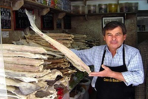
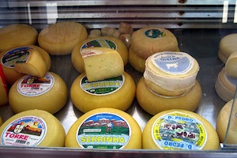
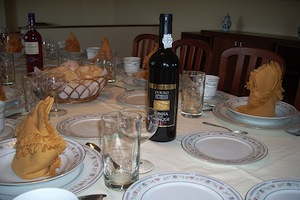

One of the staples of the Portuguese diet, is seafood. From barnacles to cod and everything in between, Portugal loves it's seafood! Since refrigeration has historically been a challenge in many villages, one of the foods that the Portuguese love and eat to this day is salted cod, known as bacalhau (even though refrigeration is now plentiful). The cod is splayed flat and dried in salt. Once this process is complete, it can be stored in a cool dry place without the cod spoiling. When ready to prepare, the cod is then soaked in water to rehydrate.

Goats are the lifeblood of most villages, so it should not come as much of a surprise that cheese would also be a staple in the Portuguese diet. Many of the cheeses tend to be rather pungent and have an incredibly strong flavor, that may not be for the delicate palate.

Wine is generally served at the afternoon and evening meals. Following the meal, espresso and brandy are served as a way to relax and transition from the meal to a time to converse and relax.
There is some etiquette that should be practiced when it comes to attending a meal. If you are invited to a Portuguese home for dinner, it is important that you are on time. You would also bring a gift of candy or flowers to the hostess. If you did not bring a gift for the hostess, you should send flowers the following day. There is even a bit of etiquette in the giving of flowers, you should not give lilies or chrysanthemums as they are traditionally used at funerals, and do not give 13 flowers, as the number 13 is believed to be unlucky.
You should not sit until invited to do so, and it is not appropriate to begin eating until the hostess says 'bon appetito'. It is also important to leave some food on your plate. Clearing your plate indicates to the hostess that she did not prepare enough food. Dinners are always considered formal and dress should be conservative.